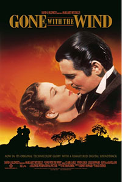
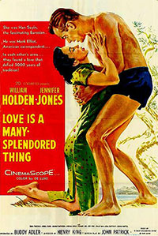

Breakfast At Tiffany's 1961
Rebel Without A Cause 1955
Giant 1956
Casablanca 1942
Gone With The Wind 1939
Love Is A Many-Splendored Thing 1955

Breakfast at Tiffany's is a 1961 drama directed by Blake Edwards,starring George Peppard and Audrey Hepburn. The story is about a young woman,from New York, who works as an expensive escort whose dream is to marry an old and rich man. Iconic is the scene of Audrey Hepburn wearing a black tight dress outside Tiffany having breakfast.

Rebel without a cause is a 1955 drama directed by Nicholas Ray,starring James Dean.This probably is the most famous movie of J.Dean. The story is about a troublemaker teen who moves to a new city,makes some bad friendships and falls in love with a girl.

Giant is a 1956 drama directed by George Stevens,starring James Dean, Elizabeth Taylor and Rock Hudson. The story is about a tense rivarly between a Texas rancher and an ambitious young man.

Casablanca is a 1942 drama directed by Michael Curtiz,starring Humphrey Bogard and Ingrid Bergman. The story is about a nightclub owner who meets his old flame after many years finding out that that love never changed. " We will always have Paris " is the most famous quote related to this movie.
Gone with the wind is a 1939 drama directed by Victor Fleming,starring Vivien Leigh and Clarck Gable. This movie is probably the most famous of all time,everyone knows it,everyone has seen it at least once. The story develops during the American Civil War and follows the adventures,the loves and troubles of Scarlett O'Hara. " Frankly,my dear,I don't give a damn" was voted the number one movie line of all time by American Film Institute in 2005.
Love is a many-splendored thing is a 1955 drama directed by Henry King,starring William Holden and Jennifer Jones. The story is about a love between and American reporter and an Eurasian doctor. They will face many prejudices because of their love.